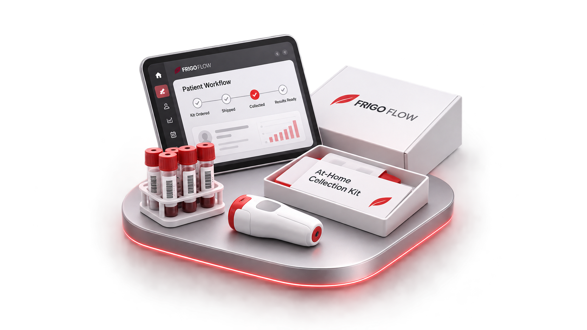
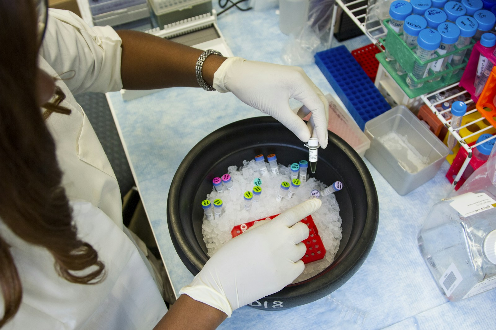

01 / 09
Patient management
Manage patient enrollment and diagnostic histories.
Simplify diagnostic testing with centralized ordering, collection tracking, and secure results access, all within your clinic’s own branded experience.

HOW IT WORKS

Explore Our PlatformDiagnostic workflow capabilitiesCreate a patient and select an available testing package.
Coordinate the diagnostic request through our partner network.
Monitor kit, collection, and lab processing updates in real time.
Authorized clinic users can securely view and manage lab results.
LESS ADMIN. MORE OVERSIGHT.
Manage patient testing workflows in one place.
See available status updates and identify patients who need attention.
A familiar, branded portal for your staff and patients.
A clear start to the testing journey.
Clinical interpretation stays with your healthcare provider.
WHITE-LABEL EXPERIENCE
Deliver a seamless testing experience for your team and patients with a custom-branded portal, powered by Frigo Flow’s secure infrastructure.
Manage patient enrollment and diagnostic histories.
Initiate and coordinate testing requests.
Monitor available kit and collection updates.
Provide controlled access to laboratory reports.
Deliver a personalized, clinic-branded experience for staff and patients.
Keep patient information secure with granular permissions and audit logs.
Create a patient and select an available testing package.
Monitor kit, collection, and lab processing updates in real time.
Give patients secure access to their available lab results.
PATIENT DATA PROTECTION
Ensure the right access for each user.
Built with industry-standard security practices.
Maintain a record of key actions, including agreement acceptance and data access.
TRUSTED HEALTHCARE PARTNERS
Discover how modern diagnostic infrastructure can help clinics and healthcare providers deliver better testing experiences.
Fictional placeholder testimonials. Not actual customer endorsements.
No. Frigo Flow is a diagnostic workflow platform that connects clinics, patients, and diagnostic partners. Laboratory testing is performed through the partner network.
Yes. The clinic and patient portals can reflect your clinic’s logo, colors, and domain for a consistent branded experience.
Patients can follow available test-order updates in their clinic’s branded portal. Available updates depend on the collection and processing information provided by diagnostic partners.
Patients can access results made available to them through their clinic’s portal. Access is managed by the clinic and its configured permissions.
No. Frigo Flow supports diagnostic workflows and access to information. Clinical interpretation and treatment decisions remain with the patient’s healthcare provider.
LET’S CONNECT
See how Frigo Flow can streamline diagnostic testing for your clinic.
Patient enrollment.
Diagnostic ordering.
Results access.